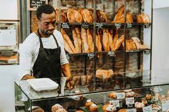
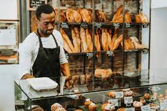
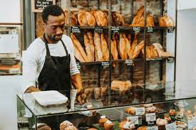

.jpg) 

feel free to contact us and make your order...
We're thrilled to have you join us in our little corner of pastry paradise. Here's a glimpse into what makes our bakery a special place:
* Crafted with Care: Each treat that emerges from our ovens is a testament to our commitment to quality and craftsmanship. From flaky croissants to decadent cakes, every bite is a labor of love.
* Local Flavor, Global Inspiration: We celebrate the rich tapestry of flavors from around the world while staying rooted in our local community. Every ingredient tells a story, and we're here to share those stories with you through our delicious creations.
* Community Connection: More than just a bakery, we're a gathering place for friends, family, and neighbors to come together and create lasting memories over coffee and confections.
* Personalized Service: Whether you're a regular or a first-time visitor, our friendly staff is here to ensure your experience is nothing short of exceptional. Have a special request? Don't hesitate to ask—we're here to make your bakery dreams come true!.
* Sustainability at Heart: We're committed to baking with a conscience, prioritizing eco-friendly practices to reduce our environmental impact and ensure a brighter future for generations to come.
* So come on in, grab a pastry (or two!), and let us treat you to a taste of happiness. Thank you for choosing Hugosluv, where every moment is sweet and every bite is a delight!.
